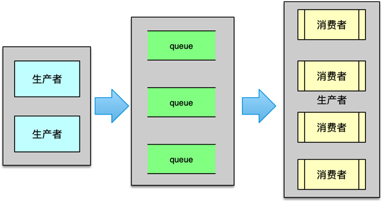
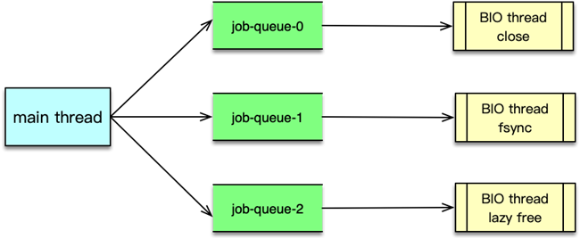

- 00 开篇寄语：缓存，你真的用对了吗？.md
- 01 业务数据访问性能太低怎么办？.md
- 02 如何根据业务来选择缓存模式和组件？.md
- 03 设计缓存架构时需要考量哪些因素？.md
- 04 缓存失效、穿透和雪崩问题怎么处理？.md
- 05 缓存数据不一致和并发竞争怎么处理？.md
- 06 Hot Key和Big Key引发的问题怎么应对？.md
- 07 MC为何是应用最广泛的缓存组件？.md
- 08 MC系统架构是如何布局的？.md
- 09 MC是如何使用多线程和状态机来处理请求命令的？.md
- 10 MC是怎么定位key的.md
- 11 MC如何淘汰冷key和失效key.md
- 12 为何MC能长期维持高性能读写？.md
- 13 如何完整学习MC协议及优化client访问？.md
- 14 大数据时代，MC如何应对新的常见问题？.md
- 15 如何深入理解、应用及扩展 Twemproxy？.md
- 16 常用的缓存组件Redis是如何运行的？.md
- 17 如何理解、选择并使用Redis的核心数据类型？.md
- 18 Redis协议的请求和响应有哪些“套路”可循？.md
- 19 Redis系统架构中各个处理模块是干什么的？.md
- 20 Redis如何处理文件事件和时间事件？.md
- 21 Redis读取请求数据后，如何进行协议解析和处理.md
- 22 怎么认识和应用Redis内部数据结构？.md
- 23 Redis是如何淘汰key的？.md
- 24 Redis崩溃后，如何进行数据恢复的？.md
- 25 Redis是如何处理容易超时的系统调用的？.md
- 26 如何大幅成倍提升Redis处理性能？.md
- 27 Redis是如何进行主从复制的？.md
- 28 如何构建一个高性能、易扩展的Redis集群？.md
- 29 从容应对亿级QPS访问，Redis还缺少什么？.md
- 30 面对海量数据，为什么无法设计出完美的分布式缓存体系？.md
- 31 如何设计足够可靠的分布式缓存体系，以满足大中型移动互联网系统的需要？.md
- 32 一个典型的分布式缓存系统是什么样的？.md
- 33 如何为秒杀系统设计缓存体系？.md
- 34 如何为海量计数场景设计缓存体系？.md
- 35 如何为社交feed场景设计缓存体系？.md
25 Redis是如何处理容易超时的系统调用的？
本课时我们主要学习通过 BIO 线程解决处理容易超时的系统调用问题，以及 BIO 线程处理的任务与处理流程等内容。
BIO 线程简介
Redis 在运行过程中，不可避免的会产生一些运行慢的、容易引发阻塞的任务，如将内核中的文件缓冲同步到磁盘中、关闭文件，都会引发短时阻塞，还有一些大 key，如一些元素数高达万级或更多的聚合类元素，在删除时，由于所有元素需要逐一释放回收，整个过程耗时也会比较长。而 Redis 的核心处理线程是单进程单线程模型，所有命令的接受与处理、数据淘汰等都在主线程中进行，这些任务处理速度非常快。如果核心单线程还要处理那些慢任务，在处理期间，势必会阻塞用户的正常请求，导致服务卡顿。为此，Redis 引入了 BIO 后台线程，专门处理那些慢任务，从而保证和提升主线程的处理能力。

Redis 的 BIO 线程采用生产者-消费者模型。主线程是生产者，生产各种慢任务，然后存放到任务队列中。BIO 线程是消费者，从队列获取任务并进行处理。如果生产者生产任务过快，队列可用于缓冲这些任务，避免负荷过载或数据丢失。如果消费者处理速度很快，处理完毕后就可以安静的等待，不增加额外的性能开销。再次，有新任务时，主线程通过条件变量来通知 BIO 线程，这样 BIO 线程就可以再次执行任务。
BIO 处理任务
Redis 启动时，会创建三个任务队列，并对应构建 3 个 BIO 线程，三个 BIO 线程与 3 个任务队列之间一一对应。BIO 线程分别处理如下 3 种任务。
- close 关闭文件任务。rewriteaof 完成后，主线程需要关闭旧的 AOF 文件，就向 close 队列插入一个旧 AOF 文件的关闭任务。由 close 线程来处理。
- fysnc 任务。Redis 将 AOF 数据缓冲写入文件内核缓冲后，需要定期将系统内核缓冲数据写入磁盘，此时可以向 fsync 队列写入一个同步文件缓冲的任务，由 fsync 线程来处理。
- lazyfree 任务。Redis 在需要淘汰元素数大于 64 的聚合类数据类型时，如列表、集合、哈希等，就往延迟清理队列中写入待回收的对象，由 lazyfree 线程后续进行异步回收。
BIO 处理流程
BIO 线程的整个处理流程如图所示。当主线程有慢任务需要异步处理时。就会向对应的任务队列提交任务。提交任务时，首先申请内存空间，构建 BIO 任务。然后对队列锁进行加锁，在队列尾部追加新的 BIO 任务，最后尝试唤醒正在等待任务的 BIO 线程。

BIO 线程启动时或持续处理完所有任务，发现任务队列为空后，就会阻塞，并等待新任务的到来。当主线程有新任务后，主线程会提交任务，并唤醒 BIO 线程。BIO 线程随后开始轮询获取新任务，并进行处理。当处理完所有 BIO 任务后，则再次进入阻塞，等待下一轮唤醒。
© 2019 - 2023 Liangliang Lee. Powered by gin and hexo-theme-book.